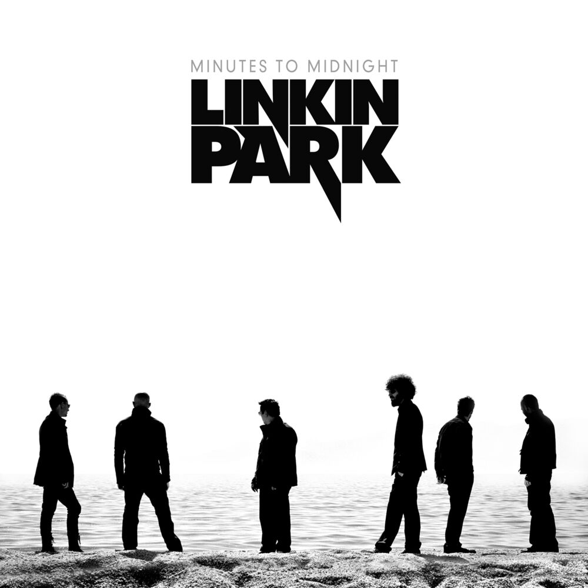

Hands Held High

Lyrics
Turn my mic up louder, I got to say something
Lightweights steppin' aside when we come in
Feel it in your chest, the syllables get pumping
People on the street then panic and start running
Words on loose leaf sheet, complete coming
I jump in my mind, I summon the rhyme I'm dumping
Healing the blind, I promise to let the sun in
Sick of the dark ways we march to the drumming
Jump when they tell us that they wanna see jumping
Fuck that, I wanna see some fists pumping
List something, take back what's yours
Say something that you know they might attack you for
'Cause I'm sick of being treated like I had before
Like it's stupid standing for what I'm standing for
Like this war's really just a different brand of war
Like it doesn't cater to rich and abandon poor
Like they understand you, in the back of their jet
When you can't put gas in your tank, these fuckers
Are laughing their way to the bank, and cashing their check
Asking you to have the passion and have some respect
For a leader so nervous in an obvious way
Stuttering and mumbling for nightly news to replay
And the rest of the world watching at the end of the day
In the living room, laughing like, "What did he say?"
Amen
Amen
Amen
Amen
Amen
In my living room watching it, I am not laughing
'Cause when it gets tense, I know what might happen
The world is cold, the bold men take action
Have to react to get blown into fractions
At 10 years old, it's something to see
Another kid my age drugged under a Jeep
Taken and bound and found later under a tree
I wonder if he had thought 'the next one could be me'
Do you see the soldiers that are out today?
They brush the dust from bulletproof vests away
It's ironic, at times like this you'd pray
But a bomb blew the mosque up yesterday
There's bombs on the buses, bikes, roads
Inside your market, your shops, and your clothes
My dad, he's got a lot of fear, I know
But enough pride inside not to let that show
My brother had a book he would hold with pride
A little red cover with a broken spine on the back
He hand-wrote a quote inside,
"When the rich wage war, it's the poor who die"
Meanwhile, the leader just talks away
Stuttering and mumbling for nightly news to replay
The rest of the world watching at the end of the day
Both scared and angry, like "What did he say?"
Amen
Amen
Amen
Amen
Amen
With hands held high into a sky so blue
The ocean opens up to swallow you
With hands held high into a sky so blue
The ocean opens up to swallow you
With hands held high into a sky so blue
The ocean opens up to swallow you
With hands held high into a sky so blue
The ocean opens up to swallow you
With hands held high into a sky so blue
The ocean opens up to swallow you